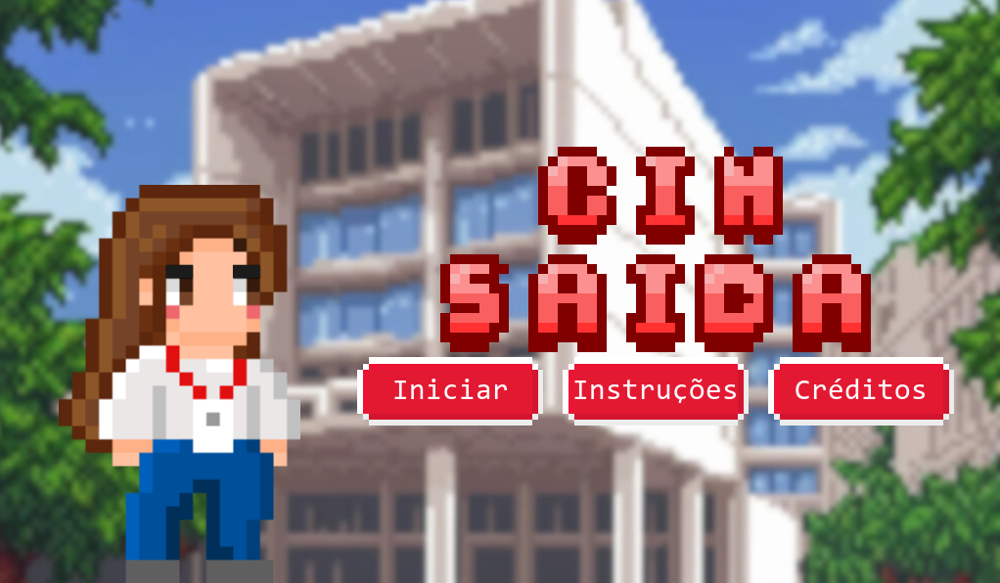
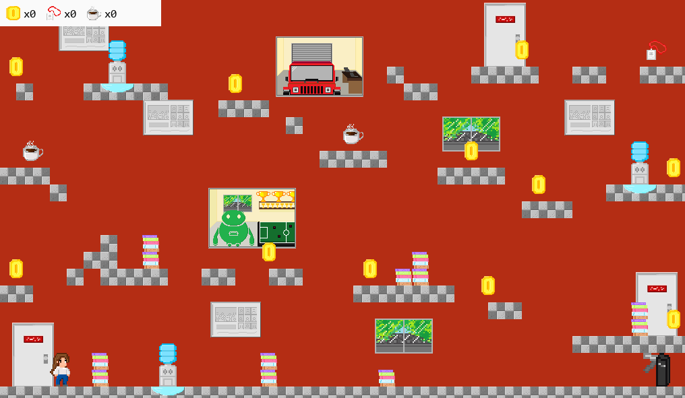

Projetos
CIn Saída


Para a disciplina de Introdução a Programação eu e meu grupo criamos o jogo CIn Saída usando pygame. Ele é um jogo de plataforma, em que o objetivo do jogador é pegar o crachá e depois chegar na catraca para vencer, também é possivel pegar o item café, que aumenta o pulo, e moedas, mas é necessário andar com cuidado! Os bebedouros estão vazando e encostar nas poças de água fará você escorregar e perder o jogo!
Foi um projeto muito divertido e ao mesmo tempo desafiador de realizar, esse processo me ensinou muito sobre organização, trabalho em grupo e boas práticas no uso do github
Link para o repositório do GitHub do projetoPharmaGuard
Para a disciplina de Construção de Artefátos digitais nosso grupo recebu a terefa de, seguindo os preceitos do design thinking, idealizar um artefáto digital que solucione alguma dor real de um grupo de usuários. Começamos identidicando uma dor, para isso realizamos pesquisas de mesa e, posteriormente uma pesquisa de campo no almoxarifado do hospital das clínicas da UFPE, a dor que nossa equipe encontrou foi a demora e possibilidade de melhora na contagem de medicamentos e no preenchimento dos formularios de contagem, depois realizamos mapas mentais, jornada do usuário e personas. Posteriormente começamos o processo de ideação para a criação do conceito de uma aplicação que auxiliasse na contagem dos medicamentos e na organização dos formulários dessas contagens, utilizando brainstorming e brainsketching, Ao finail, focamos em prototipar nossa ideia, primeiramente em desenho e mais adiante no figma, depois levamos nosso protótimo do figma para teste com os possíveis usuários e ajustamos o protótipo.
A aplicação teria duas funções principais, consultar o histórico de contagens e realizar novas contagens, com a possibilidade de realizá-las de forma múltipla ou unitária.
Foi um projeto desafiador, que, além de aprimorar minhas habilidades de trabalho em grupo, me ensinou muito sobre técnicas e conceitos muito importantes do design e da contrução de soluções digitais.
Link para o projeto no figma Link para a apresentção em slides sobre o processo de design realizado para elaboração do projeto